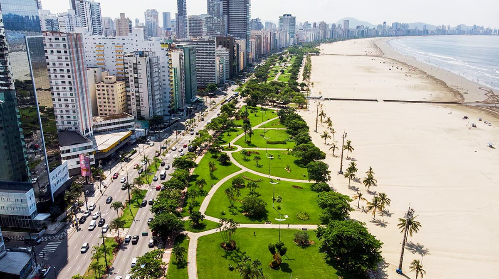
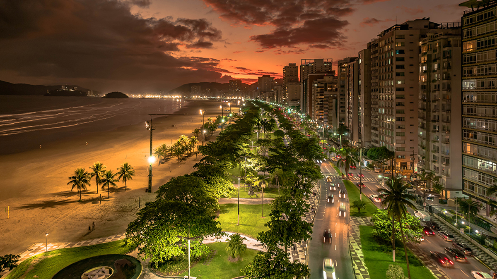

Santos é um convite para descobrir a história e as belezas do litoral paulista. Aqui, praias, jardins à beira-mar e a riqueza do patrimônio histórico se encontram para revelar a cultura, as tradições e a importância de uma cidade marcada pelo turismo e pelo porto. Conhecimento, turismo e identidade local, tudo em um só lugar.
Conheça a história, a importância e as riquezas naturais e culturais que fazem Santos único.
Santos é importante para o litoral paulista por sua relevância histórica, econômica e cultural. Seu porto movimenta grande parte do comércio exterior brasileiro, enquanto suas praias, seus jardins à beira-mar e seu patrimônio histórico atraem turistas e valorizam a identidade local.
Santos está localizada no litoral do estado de São Paulo, na região da Baixada Santista, a cerca de 70 km da capital paulista. Situada junto ao Oceano Atlântico, destaca-se por suas praias, seus jardins à beira-mar e sua importância portuária, que conecta a cidade a diversas regiões do Brasil e do mundo.
Santos abriga o Museu do Café, instalado em um edifício histórico ligado à importância do café na economia brasileira; Possui um dos maiores jardins frontais de praia do mundo, reconhecido pelo Guinness World Records; É conhecida por seu porto, por sua tradição futebolística ligada ao Santos Futebol Clube e por seu patrimônio histórico e cultural.
Santos possui uma economia baseada principalmente nas atividades portuárias, no comércio, nos serviços e no turismo, que geram empregos e movimentam a região. Seu porto é um dos principais do Brasil, desempenhando um papel fundamental no comércio exterior. Além disso, suas praias, atrações históricas e rede hoteleira contribuem para o desenvolvimento econômico da cidade.
Santos atrai visitantes com suas praias, jardins à beira-mar, atrações históricas e espaços culturais. A cidade também oferece passeios pelo centro histórico, visitas ao Museu do Café e atividades ligadas ao porto, sendo um destino importante para o turismo, a cultura e o lazer no litoral paulista.
Santos possui praias, áreas de manguezais e remanescentes de Mata Atlântica, que abrigam diversas espécies de animais e plantas. Seus jardins à beira-mar e áreas naturais contribuem para a paisagem da cidade, enquanto a preservação desses ambientes é essencial para a biodiversidade e o equilíbrio ambiental da região.
Descubra alguns dos destinos que valem a visita em Santos.
| Localização | Atração | Indicação | Nota dos visitantes |
|---|---|---|---|
| Centro Histórico | Museu do Café | História e cultura | 9,0/10 |
| Gonzaga | Jardins da Orla | Natureza e lazer | 9,0/10 |
| Vila Belmiro | Memorial das Conquistas do Santos FC | Futebol e história | 9,0/10 |
| Centro Histórico | Monte Serrat | História e paisagens | 8,5/10 |
| Boqueirão | Praia do Boqueirão | Praia e lazer | 8,5/10 |
| Valongo | Estação do Valongo | História e arquitetura | 8,5/10 |
| Ponta da Praia | Museu de Pesca | Ciência e cultura | 8,0/10 |
| José Menino | Parque Roberto Mário Santini | Lazer e paisagens | 8,0/10 |
| Centro Histórico | Outeiro de Santa Catarina | História e patrimônio | 8,0/10 |